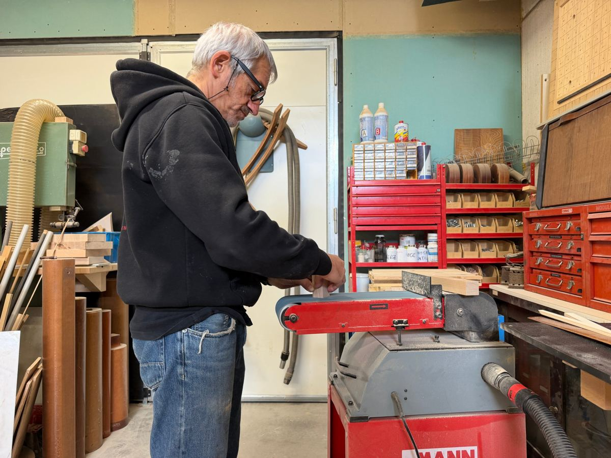

The workshop · Cesena
Where furniture for listening is made.
An artisan workshop in Cesena, where I build furniture for hi-fi systems and listening rooms. Every piece passes through my hands: from choosing the board to the finish, one piece at a time.

About me.
My name is Fabrizio Berlati. I started working wood alongside some relatives who have been carpenters, cabinetmakers and French polishers for generations: from them I learnt the basics and got to know the woods and the machines.
Music, on the other hand, has always been with me: I bought my first systems when I was barely an adult. So, as soon as I started working wood, I had a thousand ideas for building the furniture you'll find on this site.
What I like about this work is being able to create something with my hands and break out of the usual everyday routine.
The woods I use.
I choose the wood according to the weight it has to carry and the room it will go in. These are the woods of my furniture; for a custom piece we can consider others.
Beech
Hard and dense, with a fine grain and a light, even colour. It carries weight without bending: it's the wood of the Vinyl.
American walnut
Warm brown, with pronounced grain. It gives a piece a darker, more classic look.
Doussié
A hard, stable African wood, honey-coloured, that darkens towards amber with light. One of the two woods of the Cube.
Oak
Hard and tough, with a clearly visible grain and a golden colour. A classic, solid wood that carries weight well and lasts.
Mahogany
Reddish brown, with a fine, even grain. It is stable and works well; over time it darkens and takes on warm highlights.
Bubinga
A very hard, heavy African wood, reddish brown with darker grain. It gives a piece real presence.
Wenge
Almost black, hard and dense. I use it for edges and details that need to stand out, like the shelves of the Vinyl.
Mixed woods
In the Wave I put strips of different woods side by side: each panel has its own combination of tones.
How I work.
Some of the steps in my work. They are never the same: it depends on what I'm building. Some pieces need one or two, others as many as twenty.
- On paperFirst of all I put the idea on paper. I still like writing and drawing by hand: that's where I decide what to build, and I enjoy it too.
- The woodFrom the drawing I work out how much wood I need, then I go and choose it and buy it.
- Cutting and planingI cut the boards and run them through the jointer and thicknesser until every piece marked on the drawing is ready.
- Drilling, routing and sandingThen I drill, rout and sand. Sanding is the most tedious part of the job, but it's what makes a piece clean.
- AssemblyFinally I assemble the piece, and often take it apart and put it back together several times: we're only human, sometimes we get things wrong. It's a long job, but that's how it comes out right.
Made in Cesena, shipped across Europe.
You'll find me in Cesena, at Via Archimede 605, 47521 Cesena (FC). From here I ship furniture across Europe.
You can come and see the furniture in person. If you're coming from far away, write to me first: we'll set an appointment so I'm sure to be there.